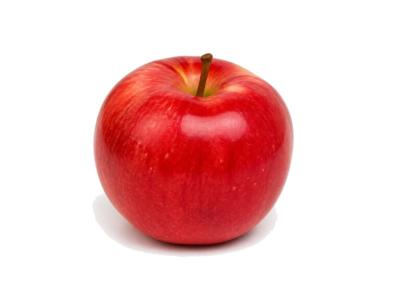

Owoce
Jabłko
Jabłko: 0.3 g białka, 52 kcal, 14 g węglowodanów i 0.2 g tłuszczu na 100 g. Kategoria: Owoce.
Kalorie52 kcalna 100 g
Białko / proteiny0.3 g
Węglowodany14 g
Tłuszcz0.2 g
Cena (szac.)~1,23 złza 100 g
Ceny zaktualizowano: maj 2026 (szacunek — ceny w popularnych supermarketach)
Porcja: sztuka (150g)
| Kalorie | 78 kcal |
|---|---|
| Białko | 0.4 g |
| Węglowodany | 21 g |
| Tłuszcz | 0.3 g |
| Cena (szac.) | ~1,85 zł |
Szczegółowe składniki odżywcze na 100 g
| Wartość energetyczna (kalorie) | 52 kcal |
|---|---|
| Białko (proteiny) | 0.3 g |
| Węglowodany | 14 g |
| Tłuszcz | 0.2 g |
| Tłuszcze nasycone | 0 g |
| Tłuszcze nienasycone | 0.2 g |
| Witaminy i minerały | Witamina C, Potas, Mangan |
| Współczynnik kcal / 1 g białka | 173.3 |
| Cena produktu (szac. za 100 g) | ~1,23 zł |
| Cena za 100 g białka (szac.) | ~411,11 zł |